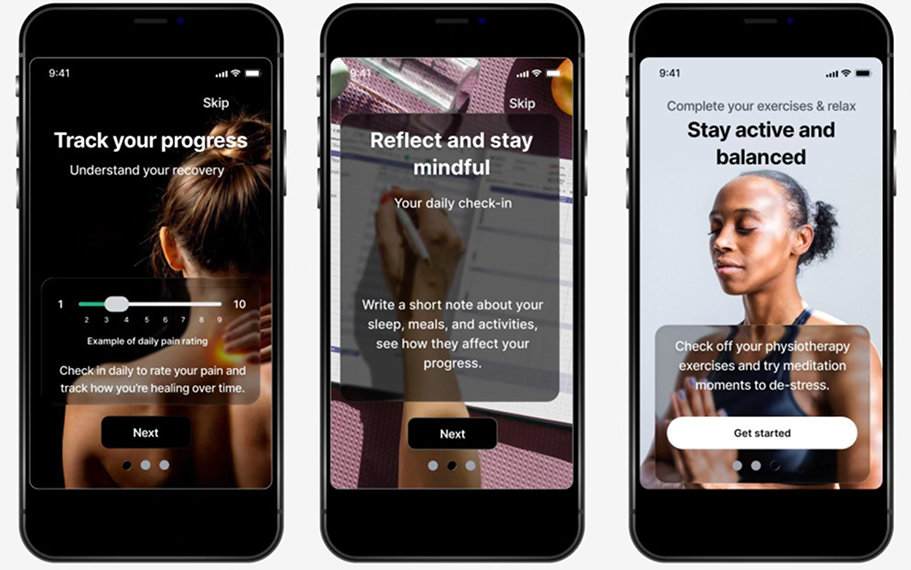
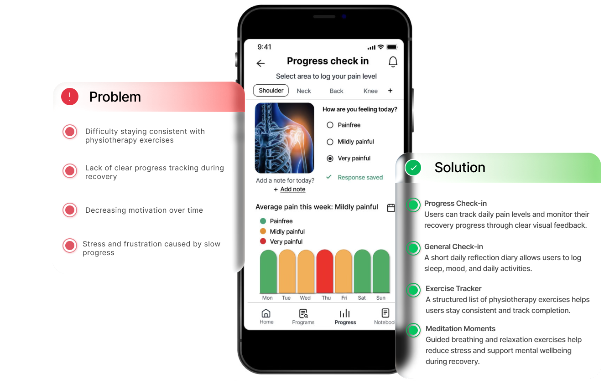
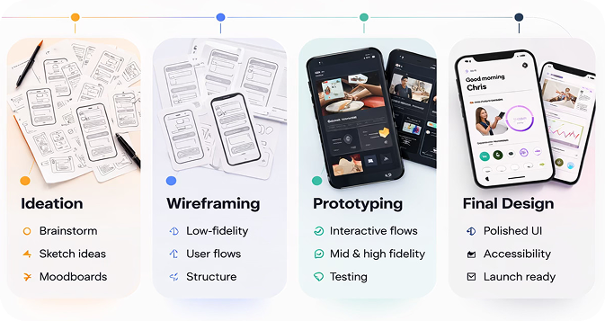
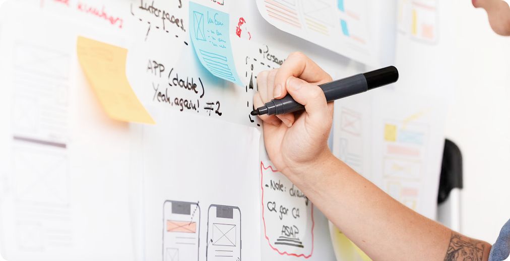
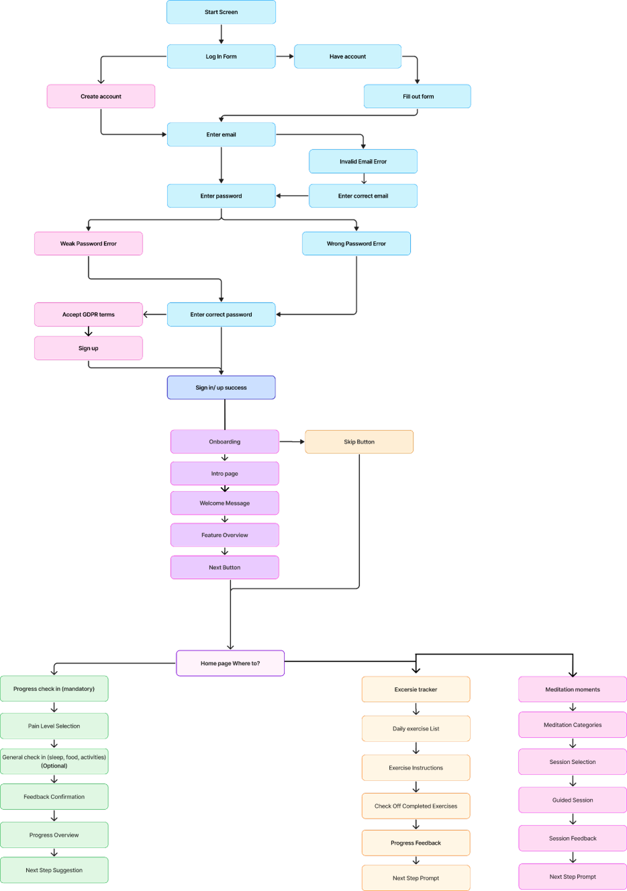
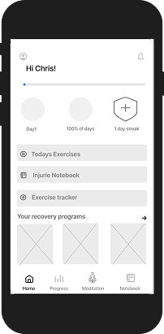

Overview
Many people recovering from injuries struggle to stay consistent with their rehabilitation exercises. Recovery often takes several months, and patients may lose motivation or forget their routines during the process.
A mobile app concept that helps people stay consistent with physiotherapy exercises, track recovery progress, and stay motivated throughout the rehabilitation journey.

Recovering from an injury can be a long and frustrating process. This UX/UI project explores how digital tools can support people during rehabilitation by helping them stay consistent with physiotherapy exercises, track their progress, and stay motivated.
Many people recovering from injuries struggle to stay consistent with their rehabilitation exercises. Recovery often takes several months, and patients may lose motivation or forget their routines during the process.
We worked together on every step of the process, completing the entire project in a one-week sprint.
The goal was to create a calm and supportive digital experience that addresses both the physical and emotional aspects of recovery.
To guide the design process, the primary persona was created based on the target users.
Chris is a 37-year-old designer and former competitive swimmer recovering from shoulder surgery. He wants to regain strength and mobility but struggles to stay consistent with his rehabilitation exercises.
Key insights from the persona analysis revealed that the app needed to:


The project followed a structured UX process to explore ideas, define the product structure, and develop the final interface.

Moodboards, sketches, and early concepts helped define the visual direction and core experience of the app.

Moodboards, sketches, and early concepts helped define the visual direction and core experience of the app.
During the ideation phase, different concepts and interface ideas were explored to determine how the app could best support users during recovery.

User flows were created to map the main journey through the app.

Low-fidelity sketches were created to explore layout ideas and interaction patterns.


Selected home page

Low- and mid-fidelity wireframes were created to test layout ideas and define the main user flow.
The wireframes focused on the core features of the app:


The wireframes demonstrates the complete user journey from onboarding to tracking recovery progress.
The final interface focuses on simplicity, clear navigation, and motivational feedback to support users throughout their rehabilitation journey.

The final result is a high-fidelity mobile prototype that combines recovery tracking, exercise guidance, and wellbeing support in one experience. The design demonstrates how a supportive and simple interface can help users stay consistent with rehabilitation exercises while tracking their recovery progress.
Thank you for viewing this case study.